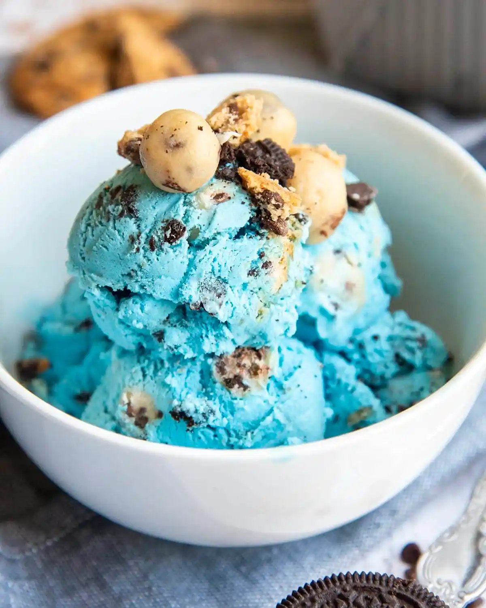

Cookie Monster Recipe

Description
Creamy (no churn!) vanilla ice cream loaded with 2 different kinds of cookies. A cookie lover's dream come true!
Ingredients
- 2 Cups Heavy Whipping Cream
- 1 14 Ounce Can Sweetened Condensed Milk
- 2 Tablespoons Vanilla Extract
- 1/2-1 Teaspoon Blue food Coloring
- 20 Chocolate Sandwich Cookies, roughly chopped
- 15 Chocolate Chip Cookies, roughly chopped
Steps
- Whip heavy cream, vanilla, and food coloring together until stiff peaks form. If you're like me and dont have a mixer all you need is a VERY cold bowl/whisk and some upper arm strength!
- Stir in sweetened condensed milk until well blended. Add additional food coloring to reach your desired shape of blue.
- Fold in chopped cookies sprinkling extra on top if desired
- Freeze for 6 hours.